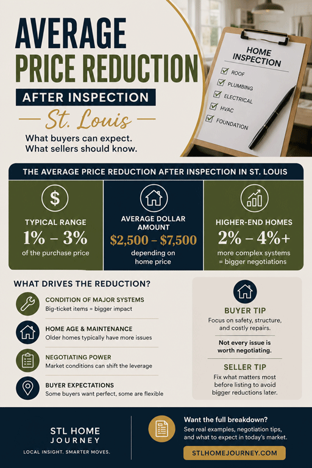

STL Home Buyer Journey
George Kindler · 13 Years · 250+ Transactions
The inspection report came back. Now comes the part most buyers handle wrong — asking for too little, asking for the wrong thing, or asking in a way that the seller can easily dismiss. Here is what is realistic, what actually gets agreed to, and how to frame the request.

The honest answer: it depends entirely on what the inspection found. In St. Louis, buyers routinely negotiate between $3,000 and $15,000 after inspection — but that number is driven by specific findings, not by the age of the home or a percentage of the purchase price.
There is no universal average because two inspection reports on two identical homes produce two completely different negotiating positions. A home with a 22-year-old HVAC system that is still operational is a different conversation than one with a Federal Pacific panel, active foundation movement, and failed cast iron drain lines. One might produce a $4,500 credit. The other might produce $18,000 in concessions — or a cancelled contract.
What the data shows across St. Louis transactions:
St. Louis has a specific housing stock problem. The metro has a high concentration of homes built between 1940 and 1985, and those homes carry recurring inspection findings that are both expensive and well-documented. Sellers in this market have heard these objections before. The ones that produce concessions are the ones with clear, measurable repair costs.
Buying in South County? Federal Pacific panels, cast iron drain lines, and foundation issues appear at higher rates in the 1950s–1970s stock that dominates Mehlville, Lemay, and Affton. South County St. Louis Neighborhood Guide → →| Finding | Typical St. Louis Repair Cost | Negotiating Leverage |
|---|---|---|
| Foundation cracks / active movement | $4,000–$25,000+ | High |
| Federal Pacific or Zinsco electrical panel | $3,500–$6,500 | High |
| Failed or failing cast iron drain lines | $4,000–$15,000 | High |
| HVAC system at or past end of life | $4,500–$9,000 | High |
| Roof — needs replacement within 2–3 years | $6,000–$14,000 | Medium |
| Water heater at end of life | $900–$1,800 | Medium |
| Negative grading / water intrusion evidence | $1,500–$6,000 | Medium |
| Galvanized supply lines | $3,000–$8,000 | Medium |
| Deferred maintenance items (caulk, minor rot) | $200–$800 | Low |
| Cosmetic issues disclosed pre-offer | — | None |
This is one of the most misunderstood decisions buyers face after inspection. Most of the time, a seller credit at closing is the better outcome — but not always. Here is how to think about it.
One practical note: seller credits cannot exceed your actual closing costs. If your closing costs are $7,000 and you ask for a $9,000 credit, the extra $2,000 is not refunded to you — it disappears. Size the credit request to what you can actually absorb at the table.
Not sure how much room you have for a credit? Buyer Closing Costs in St. Louis: The Full Breakdown → →The inspection objection in Missouri is a formal written document delivered within your contingency window. How it is written matters as much as what it asks for. A vague objection is easy to reject. A documented, specific, contractor-supported objection is much harder to dismiss.
Call licensed contractors for the two or three biggest findings. An HVAC company for the furnace, a plumber for the drain lines, an electrician for the panel. Written estimates take one to two days. They are the foundation of a defensible objection.
Select the two or three findings where you have estimates and clear documentation from the inspection report. Reference the inspection report page numbers and attach the contractor quotes.
Seller-completed repairs introduce quality and warranty risk. A credit lets you hire your own contractor after closing. Sellers also frequently prefer credits because repairs delay the closing timeline.
If your documented repair cost is $7,200, ask for $8,500. Sellers almost always counter rather than accept. Anchoring high gives you room to land where you actually need to be.
Decide before you send the objection what the minimum acceptable response is. If the seller counters below that number, you need to be willing to exercise the inspection contingency and walk. Sellers can read hesitation — knowing your floor makes the negotiation cleaner.
A seller can reject your inspection objection entirely. They can counter with a lower number. Or they can accept. Understanding each scenario before you submit puts you in a stronger position.
The single most important leverage point you have is the willingness to walk. Sellers who know a buyer will accept any response negotiate differently than sellers who sense the buyer is ready to terminate. Your agent should communicate resolve without ultimatum — the tone of the objection letter matters.
This was a South City St. Louis home with a documented roof issue, a foundation concern that had scared off two previous buyers, and 90 days of market exposure. We used the inspection findings and the market history to build a negotiating position before the inspection even happened — and the final outcome was a $30,000 price reduction before the inspection contingency was exercised.
The full breakdown of how that negotiation was structured — the repair estimates, the offer framing, the counter — is in the case study.
Read the full case study →After 250+ transactions, these are the approaches that consistently fail:
What is the average price reduction after a home inspection in St. Louis?
In St. Louis, buyers typically negotiate $3,000 to $15,000 after inspection, depending on what the report found. The range is wide because it is driven entirely by the specific findings and their documented repair costs — not by the purchase price or a set percentage. Structural and mechanical issues produce the largest concessions. Cosmetic findings produce little to none.
Should I ask for a price reduction or a seller credit after inspection?
A seller credit at closing is almost always better for the buyer. A $5,000 credit directly reduces the cash you wire at closing. A $5,000 price reduction lowers your loan amount, which only saves $22–$27 per month. The exception is when you are at your maximum loan-to-value limit and cannot absorb additional cash at the table — in that case a price reduction may be necessary.
Can a seller refuse to negotiate after a home inspection in Missouri?
Yes. Missouri sellers are not required to negotiate after an inspection. The inspection contingency gives you the right to object and the right to walk away if the seller declines — but it does not obligate the seller to agree to anything. A well-documented, estimate-supported objection is significantly harder to reject than a vague request.
How long do I have to respond after a home inspection in Missouri?
Your inspection contingency deadline is written into the purchase contract — typically 10 to 15 days from the executed contract date in St. Louis transactions. You must deliver your written inspection objection before that deadline or the contingency expires. Missing it by even one day voids your negotiating rights on inspection grounds.
What inspection findings are worth negotiating in St. Louis?
The findings worth negotiating are those with measurable, documentable repair costs: foundation issues, Federal Pacific or Zinsco electrical panels, failing cast iron drain lines, HVAC systems at end of life, roofs needing replacement within two to three years, and active water intrusion. Cosmetic issues, minor deferred maintenance, and items the seller disclosed upfront rarely produce meaningful concessions.
What if the seller rejects my inspection objection entirely?
If the seller rejects your objection, you have three options: accept the home as-is and proceed to closing, counter with a revised request, or terminate the contract under your inspection contingency and recover your earnest money. Your willingness to walk is the most important leverage you have. If you are not prepared to exercise the contingency, the seller will sense it.
This is one piece of the St. Louis home buying process. See how it all fits together:
📚 Complete St. Louis Buyer Guide →
Grew up in South St. Louis, lived in Dogtown for 6 years, now in South County. You'll find us at White Flag Church on Sundays. This is my city, and I know it well.
Inspection report just came back and you are not sure what to ask for? This is the exact conversation I have with buyers every week. Let's look at the findings together before you make any decisions.